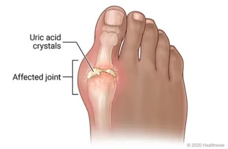
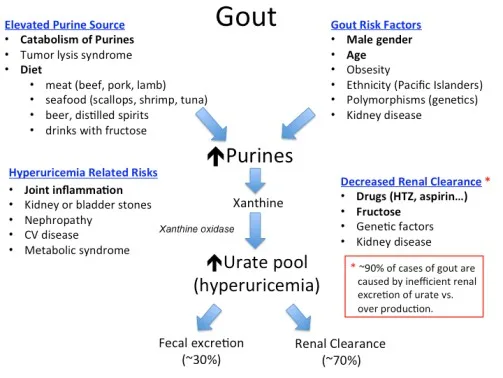

Expanded Nursing Uganda Explanation
Gout should be understood beyond a short definition. Link the concept to patient history, focused assessment, common risks, nursing priorities, documentation and evaluation of outcomes.
01 Overview
- Define Gout and differentiate it from other forms of arthritis.
- Explain the Pathophysiology of Gout, specifically focusing on uric acid metabolism and crystal formation.
- Identify the Risk Factors and triggers associated with developing gout and gout flares.
- Describe the Clinical Presentation of acute gouty arthritis, chronic tophaceous gout, and intercritical gout.
- Discuss the Diagnostic Criteria and key laboratory/imaging findings used to confirm a diagnosis of gout.
- Explain the Pharmacological Management Strategies for both acute gout flares and long-term uric acid-lowering therapy (ULT).
- Identify Non-Pharmacological Management Strategies and lifestyle modifications crucial for preventing gout flares.
- Describe Potential Complications associated with chronic gout.
Gout is a metabolic disorder characterized by elevated serum uric acid levels and deposits of urate crystals in synovial fluids and surrounding tissues.
It is derived from the Latin word “Gutta” meaning a “drop” (of liquid).
Gout also is a kind of arthritis that occurs when uric acid builds up in blood and causes joint inflammation, it can be acute or chronic.
- Acute: The affected joints often appear reddened and swollen and are sensitive to touch. The pain is described as a burning sensation. The development of acute gout is typically triggered by trauma, alcohol use, surgery, and systemic infection.
- Chronic: This is characterized by visible deposits of urate crystals (tophi) that form nodules and may be painful during gout attacks.
Unlike Osteoarthritis (OA), which is primarily a "wear and tear" condition affecting cartilage, gout is characterized by sudden, severe attacks of pain, swelling, redness, and tenderness in the joints. It is fundamentally a metabolic disorder related to the body's handling of uric acid.
Gout is a type of inflammatory arthritis caused by the deposition of monosodium urate (MSU) crystals in the joints, tendons, and surrounding tissues. These crystals form when there are persistently high levels of uric acid (a waste product from the breakdown of purines) in the blood, a condition known as hyperuricemia .
When MSU crystals precipitate and accumulate in a joint, they trigger a potent inflammatory response, leading to the characteristic symptoms of a "gout flare" or "gouty attack." Over time, if left untreated, chronic hyperuricemia can lead to recurrent flares, joint damage, and the formation of visible chalky deposits called tophi .
- Condition Underlying Cause Key Features & Diagnostics
- Osteoarthritis (OA) Primarily mechanical wear-and-tear and age-related degeneration of joint cartilage. Pathology: Cartilage breakdown, osteophyte formation, subchondral sclerosis. No crystal deposition. Onset: Gradual, progressive over years. Symptoms: Pain worse with activity, relieved by rest; morning stiffness typically brief (<30 mins); bony enlargement; crepitus. Affected Joints: Weight-bearing joints (knees, hips), hands (DIPs, PIPs, CMC of thumb). Key Diagnostic: X-ray changes. No specific blood test.
- Rheumatoid Arthritis (RA) Autoimmune disease where the body's immune system mistakenly attacks the synovium. Pathology: Synovial inflammation, pannus formation, cartilage/bone erosion. Systemic inflammation. Onset: Gradual over weeks to months, but can be acute. Symptoms: Symmetrical joint involvement; prolonged morning stiffness (>30-60 mins); fatigue, low-grade fever; warm, swollen, tender joints. Affected Joints: Symmetrical, small joints (MCPs, PIPs, MTPs), wrists, knees. Key Diagnostic: Positive RF, Anti-CCP, elevated ESR/CRP.
- Hyperuricemia: Elevated serum uric acid levels.
- Monosodium Urate (MSU) Crystal Deposition: These are the specific crystals that cause the inflammation.
- Acute Inflammatory Arthritis: Characterized by sudden, severe, often monoarticular (affecting one joint) attacks.
- Classic "Podagra": Most commonly affects the metatarsophalangeal (MTP) joint of the big toe.
Gout is associated with the presence of hyperuricemia (high blood levels of urate, or serum urate levels greater than ~6.8 mg/dl).
- Hyperuricemia: Gout occurs when urate crystals accumulate in your joint, causing the inflammation and intense pain of a gout attack. Urate crystals can form when you have high levels of uric acid in your blood.
Gout is fundamentally a disease of uric acid dysregulation . Its pathophysiology revolves around the production, breakdown, and excretion of uric acid, leading to hyperuricemia and subsequent crystal formation and inflammation.
- Origin of Uric Acid: Uric acid is the final end-product of purine metabolism in humans.
- Purines are naturally occurring compounds found in all body cells and in virtually all foods. They are building blocks of DNA and RNA.
- Sources of purines: Endogenous (internal): About two-thirds of the body's uric acid comes from the normal breakdown of cells and tissues.
- Exogenous (dietary): About one-third comes from purine-rich foods and beverages (e.g., red meat, seafood, alcohol).
- Breakdown Process: Purines are metabolized through a series of enzymatic reactions, with xanthine oxidase being a key enzyme in the final steps, converting hypoxanthine to xanthine, and then xanthine to uric acid.
- Excretion of Uric Acid: Uric acid is primarily excreted by the kidneys (about two-thirds) and to a lesser extent by the gastrointestinal tract (about one-third).
- Renal excretion involves complex processes of filtration, reabsorption, and secretion in the renal tubules.
Hyperuricemia is the prerequisite for gout, defined as a serum uric acid level generally above 6.8 mg/dL (400 µmol/L) . This is the saturation point at physiological temperature and pH at which monosodium urate (MSU) crystals can begin to form in tissues.
Hyperuricemia typically results from one of two main mechanisms, or a combination of both:
- Uric Acid Underexcretion (Most Common - ~90% of cases): The kidneys do not efficiently excrete uric acid. This can be due to: Genetic predisposition affecting renal transporters (e.g., URAT1, OATs).
- Medical conditions (e.g., chronic kidney disease, hypertension, hypothyroidism).
- Medications (e.g., diuretics like thiazides, low-dose aspirin, cyclosporine, niacin).
- Alcohol consumption (interferes with renal uric acid handling).
- Uric Acid Overproduction (Less Common - ~10% of cases): The body produces too much uric acid. This can be due to: High dietary intake of purines.
- Genetic enzyme defects (e.g., Lesch-Nyhan syndrome, glucose-6-phosphatase deficiency).
- Conditions with high cell turnover (e.g., myeloproliferative disorders, chemotherapy-induced tumor lysis syndrome, psoriasis).
- High fructose consumption (fructose metabolism increases purine breakdown).
- When serum uric acid levels consistently exceed the saturation point (6.8 mg/dL), MSU crystals can precipitate out of solution.
- These crystals prefer to deposit in: Cooler body temperatures: This explains why gout often affects peripheral joints like the big toe (MTP joint), ankles, knees, wrists, and fingers.
- Avascular or relatively avascular tissues: Cartilage, tendons, ligaments.
- Damaged joints: Pre-existing joint damage (e.g., from OA or trauma) can provide nucleation sites for crystal formation.
- Over time, these crystals accumulate in the joint synovium, cartilage, subchondral bone, and other soft tissues (leading to tophi).
The presence of MSU crystals alone does not always cause symptoms. An acute gout flare is triggered when these crystals are suddenly released from the synovial lining or when new crystals form, provoking a powerful inflammatory cascade:
- Crystal Recognition: Inflammatory cells, particularly macrophages and neutrophils, recognize the MSU crystals as foreign bodies.
- Phagocytosis: These cells attempt to engulf (phagocytose) the crystals.
- Inflammasome Activation: The engulfed MSU crystals activate the NLRP3 inflammasome within the macrophages.
- Cytokine Release: Activation of the inflammasome leads to the production and release of potent pro-inflammatory cytokines, especially interleukin-1 beta (IL-1β) .
- Inflammatory Cascade: IL-1β then amplifies the inflammatory response, recruiting more neutrophils and other inflammatory cells to the joint. This leads to the classic signs of inflammation: Pain: Due to nerve stimulation and pressure from swelling.
- Redness (Erythema): Due to vasodilation.
- Swelling (Edema): Due to increased vascular permeability and fluid accumulation.
- Heat: Due to increased blood flow.
- Loss of Function: Due to pain and swelling.
- Resolution: Eventually, the inflammatory process subsides, often through mechanisms involving anti-inflammatory cytokines, clearance of crystals, and neutrophil apoptosis. This natural resolution can take days to weeks if untreated.
If hyperuricemia persists and gout flares are left untreated, chronic accumulation of MSU crystals can lead to:
- Tophi: These are visible or palpable chalky deposits of MSU crystals, typically surrounded by chronic inflammatory cells. They commonly form in soft tissues (e.g., ear helix, elbows, fingers, Achilles tendon, around joints). Tophi can cause chronic pain, joint damage, and functional impairment.
- Chronic Gouty Arthritis: Persistent inflammation and joint destruction.
- Renal Complications: Urate nephropathy (kidney damage from crystal deposition in the renal interstitium) and uric acid kidney stones.
This helps us identify individuals predisposed to gout, while recognizing triggers allows patients to manage their lifestyle to prevent acute flares.
These factors primarily contribute to sustained elevated uric acid levels, which is the prerequisite for gout.
- Genetics/Family History: A strong family history of gout significantly increases an individual's risk. This is often due to inherited predispositions that affect uric acid production or, more commonly, its renal excretion.
- Gender and Age: Men are significantly more likely to develop gout than women, especially before menopause. This is partly due to men typically having higher uric acid levels and women having estrogen, which promotes renal uric acid excretion.
- Risk increases with age for both sexes. After menopause, women's risk approaches that of men due to declining estrogen levels.
- Obesity/Overweight: Obesity is strongly linked to hyperuricemia and gout. Adipose tissue is metabolically active and can contribute to increased uric acid production, and obesity is also associated with reduced renal uric acid excretion.
- Metabolic Syndrome and Related Conditions: Insulin Resistance/Type 2 Diabetes: Associated with reduced renal uric acid excretion.
- Hypertension (High Blood Pressure): Often co-occurs with hyperuricemia.
- Dyslipidemia: Part of the metabolic syndrome cluster.
- Kidney Disease (CKD): Impaired renal function leads to reduced uric acid excretion.
- Dietary Factors (Chronic High Intake): High Purine Foods: Regular consumption of large quantities of red meat (especially organ meats like liver, kidney), certain seafood (shellfish, sardines, anchovies, herring, mackerel).
- High Fructose Corn Syrup/Sugar-Sweetened Beverages: Fructose metabolism directly increases purine turnover and uric acid production.
- Alcohol Consumption: Particularly beer and spirits. Alcohol increases uric acid production and impairs its renal excretion. Wine appears to have a lesser effect.
- Medications: Diuretics: Thiazide diuretics (e.g., hydrochlorothiazide) and loop diuretics (e.g., furosemide) decrease renal uric acid excretion.
- Low-dose Aspirin: Can also impair uric acid excretion.
- Immunosuppressants: Cyclosporine and tacrolimus.
- Anti-tuberculosis drugs: Pyrazinamide, ethambutol.
- Levodopa.
- Medical Conditions/Other Causes of High Cell Turnover: Psoriasis, Myeloproliferative disorders, Hemolytic Anemia, Tumor Lysis Syndrome.
These factors can cause a sudden change in uric acid levels or dislodge pre-existing crystals, provoking an acute inflammatory attack.
- Sudden Changes in Serum Uric Acid Levels: Rapid increase: Heavy consumption of purine-rich foods/beverages, Dehydration.
- Initiation of Uric Acid Lowering Therapy (ULT): Ironically, when starting allopurinol or febuxostat, uric acid levels drop rapidly, which can cause existing crystals to destabilize and shed, triggering a flare. This is why ULT is usually started with flare prophylaxis.
- Rapid decrease: Aggressive dieting/fasting.
- Alcohol Consumption: Even moderate alcohol intake can trigger a flare.
- Dehydration: Increases the concentration of uric acid.
- Trauma/Injury to a Joint: A minor injury, surgery, or prolonged pressure.
- Acute Illness/Stress: Surgery, infection, heart attack.
- Medications (especially initial stages): Diuretics, Low-dose Aspirin, Starting ULT.
- Certain Medications (less common): Contrast dye.
Gout progresses through several stages if left untreated, each with clinical characteristics.
- Description: This is the initial stage where a person has elevated serum uric acid levels (hyperuricemia) but experiences no symptoms of gout, no crystal deposition-related pain, and no history of gout flares.
- Clinical Significance: While not considered "gout" at this stage, it is a precursor. Not everyone with asymptomatic hyperuricemia will develop gout (estimates vary, but it's often around 10-20% over a lifetime). Treatment is generally not recommended unless specific co-morbidities exist or uric acid levels are extremely high (>13 mg/dL).
This is the most common and recognizable presentation of gout. It's characterized by a sudden, exquisitely painful inflammatory attack.
- Onset: Typically very sudden, often waking the patient from sleep.
- Location: Monoarticular: Usually affects a single joint in about 80-90% of initial attacks.
- Podagra: The classic presentation involves the first metatarsophalangeal (MTP) joint of the big toe . This occurs in about 50% of first attacks and up to 90% of affected individuals at some point.
- Other Joints: Ankle, knee, midfoot, wrists, fingers, elbows. Rarely affects axial joints in initial attacks.
- Symptoms (Classic Signs of Inflammation): Severe Pain (throbbing, crushing, burning), Swelling, Erythema (shiny, bright red/purplish), Warmth, Tenderness (extreme sensitivity).
- Systemic Symptoms: Low-grade fever, chills, malaise.
- Duration: If untreated, typically resolves spontaneously within 3-10 days. Desquamation (peeling) of skin may occur.
- Description: This refers to the symptom-free periods between acute gout flares. During this phase, the patient has no symptoms, and the affected joints may appear normal. However, MSU crystals are still present.
- Clinical Significance: Hyperuricemia usually persists, and ongoing crystal deposition can occur. Without ULT, subsequent attacks become more frequent, severe, and polyarticular.
This stage develops in individuals with long-standing, uncontrolled hyperuricemia and recurrent acute attacks. It typically takes 10-20 years to develop if gout is left untreated.
- Description: Characterized by the formation of tophi – visible or palpable deposits of monosodium urate crystals. These appear as firm, chalky, painless (unless inflamed or infected) nodules.
- Location of Tophi: Soft tissues around joints, Helix of the ear, Olecranon bursa, Prepatellar bursa, Achilles tendons. Can also develop in organs like kidneys.
- Clinical Manifestations: Joint Damage (chronic pain, stiffness, deformity), Skin Ulceration (drainage of chalky material), Nerve Compression, Kidney Issues.
The gold standard for diagnosis remains the identification of MSU crystals.
The most definitive way to diagnose gout is by identifying monosodium urate (MSU) crystals in the synovial fluid (joint fluid) aspirated from an affected joint.
- Procedure: Arthrocentesis (joint aspiration).
- Microscopic Examination: Polarized light microscope.
- Key Findings: MSU crystals are typically: Needle-shaped: Long and slender.
- Negatively birefringent: When viewed under polarized light with a red compensator, they appear yellow when parallel to the compensator axis and blue when perpendicular to it.
- Presence of Leukocytes: High white blood cell count (neutrophils). Also rule out septic arthritis.
- Clinical Presentation: Rapid onset, podagra, tophi.
- Laboratory Findings: Serum Uric Acid: While hyperuricemia (> 6.8 mg/dL) is a prerequisite, a normal uric acid level does NOT rule out gout during an acute flare. Levels can transiently drop during an attack.
- Inflammatory Markers: Elevated ESR and CRP (non-specific).
- Imaging Findings: X-rays: Early gout may be normal. Chronic gout shows "Punched-out" erosions with sclerotic borders ("overhanging edge" sign).
- Ultrasound: Can visualize MSU crystals as a "double contour sign".
- Dual-Energy CT (DECT): Can definitively identify MSU crystals.
- Septic Arthritis (Crucial to rule out).
- Pseudogout (CPPD).
- Rheumatoid Arthritis.
- Psoriatic Arthritis.
- Cellulitis.
- Osteoarthritis.
The pharmacological management of gout has two distinct goals:
- Rapidly alleviate the pain and inflammation of an acute gout flare.
- Prevent future flares, joint damage, and tophus formation by lowering and maintaining serum uric acid levels below the saturation point.
The primary aim during an acute flare is to reduce pain and inflammation quickly. Treatment should be initiated as early as possible after symptom onset.
- Non-Steroidal Anti-Inflammatory Drugs (NSAIDs): Mechanism: Inhibit cyclooxygenase (COX) enzymes, reducing prostaglandin production, thereby decreasing inflammation and pain.
- Examples: Indomethacin, naproxen, celecoxib.
- Dosing: Typically prescribed at high doses initially, then tapered over several days.
- Considerations: Effective and generally well-tolerated. Contraindications include peptic ulcer disease, significant renal impairment, cardiovascular disease, and anticoagulant use.
- Colchicine: Mechanism: Disrupts neutrophil function and reduces the inflammatory response to MSU crystals by inhibiting microtubule assembly. Most effective when started within 24-36 hours of symptom onset.
- Dosing: Low-dose colchicine (e.g., 0.6 mg once or twice daily) is often preferred for acute flares due to better tolerability compared to older high-dose regimens. Initial dose followed by a lower dose an hour later, then maintenance until flare resolves or for several days.
- Considerations: Side effects include diarrhea, nausea, vomiting, abdominal pain. Dosing must be adjusted in patients with renal or hepatic impairment. Drug interactions are common (e.g., with CYP3A4 inhibitors like clarithromycin, diltiazem, verapamil, and P-glycoprotein inhibitors).
- Corticosteroids: Mechanism: Potent anti-inflammatory and immunosuppressive effects.
- Administration: Can be given orally (e.g., prednisone), intramuscularly, or via intra-articular injection (directly into the affected joint).
- Considerations: Useful when NSAIDs or colchicine are contraindicated or ineffective, or for polyarticular attacks. Intra-articular injections are particularly useful for monoarticular flares. Side effects include hyperglycemia, increased blood pressure, fluid retention, and mood changes.
- IL-1 Inhibitors (e.g., Anakinra, Canakinumab): Mechanism: Block the action of interleukin-1 (IL-1), a key cytokine in the inflammatory cascade of gout.
- Considerations: Used in severe, refractory cases or when other agents are contraindicated. Administered via injection. Very expensive.
The goal of ULT is to reduce the body's uric acid burden, dissolve existing MSU crystals, prevent new crystal formation, and ultimately eliminate gout flares and tophi. The target serum uric acid level is generally < 6 mg/dL (360 µmol/L) , and often < 5 mg/dL (300 µmol/L) in patients with severe disease, frequent flares, or tophi.
When to Initiate ULT: ULT is typically recommended for patients with:
- Recurrent gout flares (two or more per year).
- Presence of tophi (clinical or radiographic).
- Gouty arthritis with evidence of joint damage on imaging.
- Gout with chronic kidney disease (CKD stage 2 or higher).
- History of uric acid kidney stones.
- First gout flare if very severe or with extremely high serum uric acid (>9 mg/dL).
- Prophylaxis: An acute flare can be triggered when starting ULT due to the rapid change in serum uric acid levels causing crystal shedding. Therefore, flare prophylaxis with low-dose colchicine or low-dose NSAIDs is usually recommended for the first 3-6 months (or longer if indicated) after initiating ULT.
- Do NOT start ULT during an acute flare. Wait until the acute flare has subsided. If a patient is already on ULT, they should continue it during a flare.
- Xanthine Oxidase Inhibitors (XOIs): These are the first-line agents for most patients. Mechanism: Inhibit the enzyme xanthine oxidase, thereby blocking the final steps in uric acid production.
- Examples: Allopurinol: Dosing: Start low (e.g., 50-100 mg daily) and titrate up gradually (e.g., by 50-100 mg every 2-4 weeks) to achieve the target uric acid level. Max dose often 800 mg/day, but depends on renal function.
- Considerations: Generally well-tolerated. Side effects include rash, gastrointestinal upset. Allopurinol Hypersensitivity Syndrome (severe, potentially fatal reaction with rash, fever, eosinophilia, liver/kidney dysfunction) is rare but serious, especially in patients with HLA-B*5801 allele (more common in certain Asian populations) and those with renal impairment or starting on high doses. Renal dosing is crucial.
- Febuxostat: Dosing: Start at 40 mg daily, can increase to 80 mg daily if target not met.
- Considerations: Can be used in patients with mild-to-moderate renal impairment without dose adjustment. Was previously associated with a higher risk of cardiovascular death compared to allopurinol in some studies, leading to a black box warning, but recent data suggests this risk may be less pronounced or restricted to specific populations.
- Uricosuric Agents: Mechanism: Increase the excretion of uric acid by the kidneys by inhibiting its reabsorption in the renal tubules.
- Examples: Probenecid: Dosing: Start low and gradually titrate.
- Considerations: Requires good renal function (creatinine clearance > 50 mL/min). Not effective in overproducers of uric acid. Side effects include gastrointestinal upset, rash. Patients must maintain good hydration to prevent kidney stone formation. Contraindicated in patients with a history of uric acid kidney stones.
- Lesinurad: (often used in combination with an XOI, usually allopurinol, in refractory cases) Mechanism: Selective uric acid reabsorption inhibitor (SURI).
- Considerations: Used to boost the efficacy of XOIs when target UA not achieved. Renal safety concerns.
- Uricase (Pegloticase): Mechanism: An enzyme that converts uric acid into allantoin, a more soluble and easily excreted substance.
- Example: Pegloticase (IV infusion).
- Considerations: Reserved for severe, refractory chronic gout, especially with large tophi, where other ULTs have failed or are contraindicated. High risk of infusion reactions and anti-drug antibodies, requiring careful monitoring.
Non-pharmacological management aims to reduce serum uric acid levels, minimize triggers for acute flares, and promote general well-being. These strategies should be discussed with every patient with gout.
The goal is not to eliminate purines entirely, as many healthy foods contain them, but to reduce intake of high-purine foods and those that increase uric acid production or impair its excretion.
- Limit or Avoid High-Purine Foods: Organ Meats: Liver, kidney, sweetbreads.
- Certain Seafood: Anchovies, sardines, herring, mussels, scallops, trout, tuna, haddock. (Note: other fish and seafood in moderation are generally acceptable and beneficial for health).
- Red Meats: Limit consumption (e.g., beef, lamb, pork) to moderate portions.
- Reduce Fructose Intake: Sugar-Sweetened Beverages: Avoid sodas, fruit juices (especially high-fructose corn syrup), and other sugary drinks. Fructose metabolism significantly increases uric acid production.
- Processed Foods: Be mindful of hidden sugars (fructose) in many processed snacks and foods.
- Fruits: While fruit contains natural fructose, whole fruits also provide fiber and other nutrients and are generally considered acceptable in moderation. The concern is with concentrated fructose from drinks.
- Moderate Alcohol Consumption (or Avoid): Beer and Spirits: Strongest association with gout flares due to increased purine load and impaired uric acid excretion. Best to avoid or severely limit.
- Wine: Generally considered to have a weaker association with flares, but moderation is still advised.
- Overall: Total alcohol intake should be limited, especially during periods of high risk or frequent flares.
- Embrace Healthy Dietary Patterns: Low-Fat Dairy Products: Studies suggest that dairy products (especially skim milk, yogurt) may actually help lower uric acid levels and reduce gout risk.
- Complex Carbohydrates: Whole grains, vegetables, and fruits are encouraged.
- Vegetables: Almost all vegetables (including purine-rich ones like spinach, mushrooms, asparagus, cauliflower) have not been shown to increase gout risk and are part of a healthy diet.
- Hydration: Drink plenty of water throughout the day (at least 8-10 glasses) to help the kidneys flush out uric acid.
- Achieve and Maintain a Healthy Weight: Obesity is a significant risk factor for hyperuricemia and gout. Gradual weight loss can lower uric acid levels and reduce the frequency and severity of flares.
- Avoid Crash Diets or Rapid Weight Loss: Fasting or very rapid weight loss can paradoxically increase uric acid levels and trigger flares. Gradual and sustained weight loss is preferred.
- Moderate Physical Activity: Regular exercise, combined with a healthy diet, helps with weight management and overall metabolic health, which can indirectly benefit gout.
- Avoid Overexertion or Joint Trauma: While exercise is good, activities that cause excessive joint stress or trauma could potentially trigger a flare in a susceptible joint.
- Adequate Fluid Intake: Drinking plenty of water helps to dilute uric acid in the urine and promotes its excretion, reducing the risk of crystal formation and kidney stones.
- Diuretics and Low-Dose Aspirin: If a patient is taking medications known to raise uric acid levels (e.g., thiazide diuretics, low-dose aspirin), their physician should evaluate if alternative medications are suitable or if the benefits outweigh the risks.
- Start ULT with Prophylaxis: As discussed in Objective 6, patients initiating uric acid-lowering therapy should always be on concurrent anti-inflammatory prophylaxis to prevent initial flares.
- Patients should be encouraged to keep a diary to identify their individual triggers, which can vary from person to person (e.g., specific foods, stress, minor trauma, dehydration).
- Avoiding these identified personal triggers can significantly reduce flare frequency.
- Rest: Rest and elevate the affected joint.
- Ice: Apply ice packs to the inflamed joint for short periods (e.g., 20 minutes at a time) to help reduce swelling and pain.
- Avoid Trauma: Protect the joint from any pressure or impact.
For emphasizing the importance of consistent management and patient adherence to treatment plans.
With modern pharmacological and non-pharmacological management, the prognosis for gout is generally very good .
- Symptom Control: Consistent adherence to uric acid-lowering therapy (ULT) can effectively lower serum uric acid levels below the target threshold (<6 mg/dL, or <5 mg/dL for severe cases).
- Flare Prevention: Maintaining target uric acid levels will prevent the formation of new MSU crystals and facilitate the dissolution of pre-existing crystals, thereby dramatically reducing the frequency and severity of acute gout flares. Many patients can achieve a flare-free state.
- Tophus Resolution: Existing tophi can shrink and even completely disappear over time with sustained low uric acid levels. This can reverse joint damage and restore function in some cases.
- Prevention of Joint Damage: By preventing crystal deposition and inflammation, ULT can halt or reverse progressive joint destruction and deformity.
- Improved Quality of Life: Patients experience less pain, better joint function, and a significant improvement in their overall quality of life.
- Reduced Comorbidities: While gout itself doesn't cause some comorbidities, effective management can indirectly improve outcomes for associated conditions like kidney disease and cardiovascular health, especially by addressing systemic inflammation and metabolic issues.
Without proper management, gout progresses through its natural history, leading to significant and often irreversible complications.
- Recurrent and More Severe Acute Flares: Flares become more frequent, often polyarticular (affecting multiple joints), more severe, and of longer duration.
- The intercritical periods (between flares) may shorten, or patients may experience continuous low-grade inflammation.
- Chronic Tophaceous Gout: This is a hallmark of untreated, long-standing gout. Tophi are crystal deposits that can form in: Joints and surrounding soft tissues: Leading to chronic pain, stiffness, persistent swelling, and ultimately, irreversible joint damage, deformity, and significant functional disability.
- Bursae: (e.g., olecranon, prepatellar) causing inflammation and swelling.
- Ear helix: Characteristic deposits that can disfigure.
- Tendons: (e.g., Achilles tendon) leading to pain, dysfunction, and potential rupture.
- Internal organs: Although less common and often only detected on advanced imaging, tophi can deposit in kidneys or heart valves, contributing to organ dysfunction.
- Joint Destruction and Deformity: The persistent presence of MSU crystals and chronic inflammation leads to erosion of cartilage and bone, resulting in a severe form of arthritis that can mimic other inflammatory arthropathies. This can lead to permanent loss of joint function.
- Kidney Complications: Uric Acid Nephrolithiasis (Kidney Stones): Elevated uric acid levels increase the risk of forming uric acid kidney stones, which can cause severe pain, urinary tract obstruction, infection, and kidney damage.
- Urate Nephropathy (Gouty Nephropathy): Chronic deposition of MSU crystals in the renal interstitium can lead to chronic inflammation, fibrosis, and progressive decline in kidney function. This can contribute to end-stage renal disease.
- Psychosocial Impact: Chronic pain, disability, and the unpredictable nature of flares can lead to depression, anxiety, social isolation, and impaired quality of life.
- Difficulty performing daily activities, working, and engaging in hobbies.
- Association with Cardiovascular and Metabolic Diseases: While hyperuricemia and gout are often associated with cardiovascular disease, hypertension, diabetes, and metabolic syndrome, the exact causal relationship is complex and actively researched. However, it is clear that untreated gout exists within a cluster of metabolic disturbances that collectively increase morbidity and mortality risks. Effective gout management, particularly by addressing underlying metabolic issues, may contribute to better overall health outcomes.
- Acute Pain related to inflammation in the affected joint(s) secondary to uric acid crystal deposition, as evidenced by patient's report of severe pain, guarding behavior, grimacing, and joint redness/swelling.
- Impaired Physical Mobility related to pain and inflammation in the affected joint(s), as evidenced by reluctance to move the affected limb, limited range of motion, and difficulty with ambulation.
- Inadequate health Knowledge related to disease process, dietary restrictions, medication regimen, and prevention strategies, as evidenced by patient's questions about gout, stated misconceptions, or observed non-adherence.
- Risk for Ineffective Health Maintenance related to potential for non-adherence to long-term uric acid-lowering therapy, dietary modifications, and lifestyle changes.
02 Nursing Uganda Clinical Lens
Use Gout as a practical nursing topic, not only a memorized definition. Connect structure, movement, pain, circulation, nerve function and safe mobility.
- What to understand first: define gout, identify the normal or expected pattern, then explain what changes when the patient is unwell.
- Why it matters in care: the nurse must recognize risk early, explain findings clearly, document accurately and know when to escalate.
- How to revise it: connect each point to assessment, nursing diagnosis or care problem, intervention, rationale and evaluation.
03 Assessment Guide
- Pain score, site, onset, deformity, swelling, bruising and ability to move.
- Distal pulse, capillary refill, colour, warmth, sensation and movement.
- Skin integrity, wounds, cast tightness, traction alignment and pressure areas.
04 Nursing Priorities, Rationales and Outcomes
- Immobilize and protect the affected part while preventing further injury.
- Control pain and swelling while monitoring neurovascular status.
- Prevent complications such as compartment syndrome, infection, pressure injury and venous stasis.
The rationale for these priorities is patient safety: nursing actions should prevent deterioration, reduce discomfort, support recovery and create clear evidence for the next caregiver.
- Expected outcome: Pain is reduced, circulation and sensation remain intact, swelling is controlled and the patient mobilizes safely within the care plan.
05 Patient Teaching and Revision Check
- Explain gout in simple language the patient or caregiver can repeat back.
- Teach warning signs, medicine or follow-up instructions, hygiene or lifestyle points where relevant.
- For exams, prepare a short answer using: definition, causes or risk factors, signs, assessment, management, complications and prevention.
- For ward practice, document baseline findings, actions taken, patient response and the plan for review.
Illustrations and Diagrams (9)




1 more diagram available — open the lesson for full illustrations.
Related Video Lectures
Watch nursing lecture videos on YouTube for this topic. Opens in a new tab.
Watch on YouTubeExternal link: YouTube may use its own cookies and terms. Nursing Uganda is not affiliated with YouTube.